화공기사(구)(구) (2003-03-16 기출문제)
1과목: 화공열역학
1. 상평형에서 계의 성질이 최대가 되는 것은?
- 엔탈피
- 엔트로피
- 내부 에너지
- Gibbs 자유 에너지
(정답률: 알수없음)

2. 기체의 상태방정식으로 사용되지 않는 식은 다음중 어느 것인가?
- Redlich-Kwong equation
- Beattie-Bridgeman equation
- Benedict-Webb-Rubin equation
- Gibbs-Duhem equation
(정답률: 알수없음)
3. 등온과정에서 300K일때 압력이 10atm에서 1atm으로 변했다면 소요된 일은?
- 787.2㎈
- 967.8㎈
- 1136.2㎈
- 1372.6㎈
(정답률: 알수없음)
4. 단열된 상자가 2개의 같은 부피로 양분되었고, 한 쪽에는 Avogadro수의 이상 기체 분자가 들어 있고 다른 쪽에는 아무 분자도 들어 있지 않다고 한다. 칸막이가 터져서 기체가 양쪽에 차게 되었다면 이때 엔트로피 변화 값 Δ S는 다음중 어느 것인가?
- Δ S = RT ln 2
- Δ S = -R ln 2
- Δ S = R ln 2
- Δ S = -RT ln 2
(정답률: 알수없음)
5. 다음중 열역학 제 2법칙의 수학적인 표현으로 올바른 것은?
- Δ U + Δ KE + Δ PE = Q - W
- Δ Stotal ≥ 0
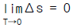
- dU = dQ - dW
(정답률: 알수없음)
6. 어떤 기체는 다음의 상태식에 따른다. P(V-b) = RT, 여기 b는 0 < b < V인 정수이다. 이 기체 1mol을 처음부피 Vi로부터 Vf로 등온팽창 시켰다면 이 때 이루어진 일(work)은 얼마인가?
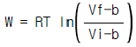
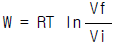
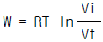
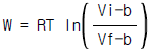
(정답률: 알수없음)
7. 다음 중 옳은 Maxwell관계식은?
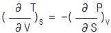
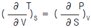
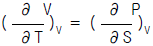
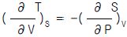
(정답률: 알수없음)
8. 단순한 유체(simple fluid)에 대하여 Pitzer의 편심계수(acentric factor)는 다음의 어떤 사항을 이용한 것인가? (단, Ps는 증기압을 나타낸다.)
- T/TC = 0.5일때 Ps/PC = 0.5이다.
- T/TC = 0.7일때 Ps/PC = 0.5이다.
- T/TC = 0.7일때 Ps/PC = 0.1이다.
- T/TC = 0.5일때 Ps/PC = 0.1이다.
(정답률: 알수없음)
9. Carnot 사이클의 열효율을 높이는데 유효한 방법은?
- 방열온도를 낮게한다.
- 급열온도를 낮게 한다.
- 동작물질의 양을 증가시킨다.
- 밀도가 큰 동작 물질을 사용한다.
(정답률: 알수없음)
10. 다음과 같은 증기-압축 냉동기의 사이클에서 성능 계수(coefficient of performance)는?
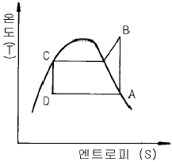
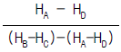
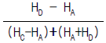
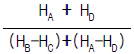
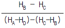
(정답률: 알수없음)
11. 단열 과정으로 조작되는 1몰의 이상기체가 있다. 이 때 계에 대하여 한 일을 여러 방법으로 계산할 수 있다. 다음 중 맞지 않는 것은? (단, γ =Cv/Cp)
- W = -Cv △T
- W = (P1V1-P2V2)/(γ -1)
- W = P1V1[1-(P2/P1)(γ-1)γ]
- W = [RT1/(γ -1)][1-(P2/P1)(γ-1)γ]
(정답률: 알수없음)
12. 380℃ 고온의 열저장고와 120℃의 저온 열저장고사이에서 작동하는 열기관이 60.0[kW]의 동력을 생산한다면 고온의 열저장고로부터 열기관으로 유입되는 열량(QH)은?
- 23.9 [kW]
- 87.7 [kW]
- 90.7 [kW]
- 150.7 [kW]
(정답률: 알수없음)
13. 이상기체를 등온 하에서 압력을 증가시키면 엔탈피는?
- 증가한다.
- 감소한다.
- 일정하다.
- 압력과 비례한다.
(정답률: 알수없음)
14. 1kg-mol의 이상기체를 P1=15atm, V1=4.72L에서 정용변화과정을 통하여 P2=1atm까지 가역변화를 시켰다. 이 때 엔탈 피변화(델타 H)값은 얼마인가? (단, Cp=5kcal/kg.mol.K, Cv=3kcal/kg.moloK이다.)
- -3027kcal
- -4027kcal
- -5027kcal
- -6027kcal
(정답률: 알수없음)
15. 순수한 성분이 액체에서 기체로 상의 전이에 대한 설명중 옳지 않은 것은?
- 1몰당 Gibbs 자유에너지 G는 불연속이다.
- 1몰당 엔트로피 S는 불연속이다.
- 1몰당 부피 V는 불연속이다.
- 1몰당 Gibbs 자유에너지 G의 온도에 대한 변화율은 불연속이다.
(정답률: 알수없음)
16. 스팀과 석탄을 고온에서 반응시켜 수소,CO,CO2,CH4를 생산 한다. 다음 반응이 제안되어 있다면 그 자유도는 얼마인가?
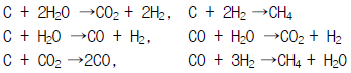
- 1
- 2
- 3
- 4
(정답률: 알수없음)
17. 폐쇄계에 관한 설명 중 틀 린 것은?
- 외부와 열전달을 할 수 있다.
- 외부와 물질전달을 할 수 있다.
- 내부에서 화학반응이 일어날 수 있다.
- 여러상(phase)이 존재할 수 있다.
(정답률: 알수없음)
18. Joule-Thomson 계수 μ T = 0일 때 기체의 온도를 역전온도(inversion temperature)라고 한다. 다음 설명 중 옳은 것은?
- 모든 기체는 역전온도 이상에서 주울 톰슨 팽창시켜도 액화될 수 있다.
- 모든 기체는 역전온도에 관계없이 액화될 수 있다.
- 모든 기체는 역전온도 이하에서만 액화된다.
- 모든 기체는 역전온도 이상에서만 액화된다.
(정답률: 알수없음)
19. 다음 중 잠열에 해당되지 않 는 것은?
- 반응열
- 증발열
- 융해열
- 승화열
(정답률: 알수없음)
20. 어떤 물질이 다음과 같은 부피팽창율과 등온압축율을 가지고 있을 때 이 물질의 상태식은 다음 중 어느 것으로 표현될 수 있는가?
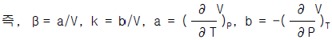
- V = aT + bP + const
- V = bT + aP + const
- V = aT - bP + const
- V = bT - aP + const
(정답률: 알수없음)
2과목: 화학공업양론
21. Heptane(C7H16)을 태워 Dryice(CO2)를 제조한다. CO2가스에서 Dryice로의 전환율은 50%이고, 시간당 Dryice제조량이 500㎏일때 필요한 Heptane의 양은?
- 325㎏/hr
- 227㎏/hr
- 162㎏/hr
- 143㎏/hr
(정답률: 알수없음)
22. 10wt% A 수용액 50kg과 20wt% B 수용액 50kg을 혼합하였다. 혼합용액의 조성은 어떻게 되겠는가?
- 10wt%
- 15wt%
- 20wt%
- 30wt%
(정답률: 알수없음)
23. 지하 220m깊이에서 부터 지하수를 양수하여 20m 옥상에 가설된 물탱크에 매초당 15㎏/s의 양으로 물을 올리고 있다. 이 때의 potential energy의 증가분(Δ Ep)은 얼마인가?
- 35300J/s
- 3600J/s
- 3000J/s
- 200J/s
(정답률: 알수없음)
24. 다음 중 경로함수끼리 짝지어진 것은?
- 내부에너지 - 일
- 위치에너지 - 엔탈피
- 엔탈피 - 내부에너지
- 일 - 엔탈피
(정답률: 알수없음)
25. 습윤공기가 1atm, 20℃에 있다. 이 때 증기의 분압이 1.75㎜Hg일 때 상대습도는? (단,20℃에서 증기압은 17.5㎜Hg이다.)
- 4.33%
- 10%
- 43.3%
- 100%
(정답률: 알수없음)
26. H2의 임계온도는 33K이고, 임계압력은 12.8atm이다. newton's 보정식을 이용하여 보정한 Tc와 Pc는?
- Tc = 47K, Pc = 26.8atm
- Tc = 45K, Pc = 24.8atm
- Tc = 41K, Pc = 20.8atm
- Tc = 38K, Pc = 17.8atm
(정답률: 알수없음)
27. 40℃에서 벤젠과 톨루엔의 혼합물이 기액평형에 있다. Raoult의 법칙이 적용된다고 볼 때 다음 설명 중 틀린 것은 어느것인가? (단, ① 40℃에서의 증기압 벤젠:180㎜Hg, 톨루엔:60㎜Hg ② 액상조성:벤젠 30%, 톨루엔:70%(몰기준))
- 이 계의 자유도는 2이다.
- 기상의 평형분압은 벤젠 54㎜Hg, 톨루엔 42㎜Hg이다.
- 이 계의 평형 전압은 240㎜Hg이다.
- 기상의 평형조성은 벤젠 56.3%, 톨루엔 43.7%이다.
(정답률: 알수없음)
28. 기화잠열을 추산하는 식의 설명중 틀린 것은?
- 포화압력의 대수값과 온도역수의 도시로부터 잠열을 추산하는 식이 Clausius-Clapeyron 식이다
- 정상비등온도와 임계온도ㆍ압력을 이용하여 잠열을 구하는 식이 Watson식이다
- 각 환산온도와 기화열로부터 잠열을 구하는 식이 Watson식이다
- 정상비등온도와 임계온도ㆍ압력을 이용하여 잠열을 구하는 식이 Riedel식이다
(정답률: 알수없음)
29. 100℃ 에서 내부 에너지 100kcal/kg을 가진 공기 2kg이 밀폐된 용기속에 있다. 이 공기를 가열하여 내부 에너지가 130kcal/kg이 되었을 때 공기에 전달되는 열량은?
- 55kcal
- 60kcal
- 75kcal
- 80kcal
(정답률: 알수없음)
30. K2Cr2O7(MW:294) 13wt%의 수용액 100㎏으로부터 64㎏의 물을 증발시킨 다음 20℃까지 냉각 시켰다. K2Cr2O7의 수율은 얼마인가? (단,20℃에서 K2Cr2O7의 용해도는 0.04㎏-mole/100㎏H2O이다.)
- 68.2%
- 71.2%
- 79.2%
- 83.2%
(정답률: 알수없음)
31. 그림은 A,B,C 3성분계의 평형곡선이다. 이 그림에 대한 설명 중 틀린 것은?
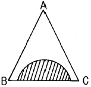
- A와 B는 완전 혼합한다.
- 사선 부분에서만 A,B,C성분이 완전히 혼합한다.
- A와 C는 완전 혼합한다.
- B와 C는 부분(성분) 혼합한다.
(정답률: 알수없음)
32. C2H5OH(ℓ) + 3O2(g) → 3H2O(ℓ) + 2CO2(g) 위 반응의 25℃에서 정용 반응열 Δ Hv = -326.1㎉일때 같은 온도에서 정압반응열 Δ Hp는 얼마인가?
- -324.7㎉
- +325.5㎉
- -326.7㎉
- +326.7㎉
(정답률: 알수없음)
33. CO2는 고온에서 2CO2 → 2CO + O2로 분해한다. 표준상태에서 11.2L의 CO2가 일정압력에서 3000K로 가열했다면 전체 혼합기체의 부피는 얼마인가?
- 160L
- 160m3
- 150L
- 150m3
(정답률: 알수없음)
34. 질소와 수소의 혼합물이 1000기압을 유지하고 있다. 이중 질소의 분압이 450 기압이라면 이 혼합물의 평균 분자량은 얼마인가? (단, 수소의 분자량은 2, 질소의 분자량은 28이다.)
- 16.7 g/gmol
- 15.7 g/gmol
- 14.7 g/gmol
- 13.7 g/gmol
(정답률: 알수없음)
35. 평균 열용량
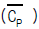
의 설명중 틀린 것은?- 정압 열용량의 온도 의존성을 고려한 열용량이다.
- 온도구간이 클때 대수평균치로 정의되는 열용량이다.
- 온도구간이 클때 분자들의 병진운동을 고려한 열용량이다.
- 온도구간이 작을때는 정압열용량과 평균정압열용량이 거의 같다.
(정답률: 알수없음)
36. 다음 그림은 증류장치를 도식한 것이다. 여기서 Qc는 condenser에서 제거된 열량, Qr는 Reboiler에서 가열한 열량, F는 공급량, D는 탑상부 제품, B는 탑하부 유출량, Cp는 각 streem의 평균비열을 의미한다. 이 계의 Over all energy balance 계산을 올바르게 표시한 것은?
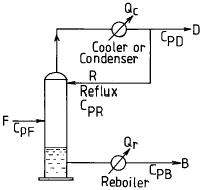
- Qr - Qc = D∫ CPDdT + B∫ CPBdT - F∫ CPFdT
- Qr - Qc = D∫ CPDdT + B∫ CPBdT + F∫ CPFdT
- Qr - Qc = F∫ CPFdT + D∫ CPDdT - B∫ CPBdT
- Qr - Qc = F∫ CPFdT - D∫ CPDdT + F∫ CPRdT
(정답률: 알수없음)
37. 도관내 흐름을 해석할 때 사용되는 베루누이식의 설명 중 틀린 것은?
- 마찰손실이 압력손실 또는 속도두 손실로 나타나는 흐름을 해석할 수 있는 식이다.
- 수평흐름이면 압력손실이 속도두 증가로 나타나는 흐름을 해석할 수 있는 식이다.
- 압력두, 속도두, 위치두의 상관관계 변화를 예측할 수 있는 식이다.
- 도관의 길이방향의 속도변화를 예측할 수 있는 식이다.
(정답률: 알수없음)
38. 순수한 에탄올과 물을 같은 무게로 혼합하여 용액을 만들었다. 이 용액에서 에탄올의 몰분율은 약 얼마인가? (단, 각각 원자량은 C:12, O:16, H:1 이다.)
- 0.5
- 0.6
- 0.4
- 0.3
(정답률: 알수없음)
39. 헨리의 법칙에 대한 설명중 틀린 것은?
- 휘발성이 없는 진한 용액의 기-액 평형을 다루는데 사용된다.
- 헨리상수(HA)는 대체적으로 용액특성에 따른 온도에 의존한다.
- 피리딘(C5H5N)과 물의 용액에서 피리딘에 대해서는 헨리법칙이 적용될수 있다.
- 기-액 평형시 기상의 한 성분의 압력(PA)은 액상에서 한 성분의 몰분율(XA)와 헨리상수(HA)의 적으로 나타낸다.
(정답률: 알수없음)
40. CO2 70V%와 NH3 30V%의 조성의 기체 혼합물을 KOH로 CO2를 제거하여 35V% CO2를 얻었다.이 때 CO2 몇%가 제거되었는 가? (단, KOH는 증발하지 않고 NH3의 양도 변하지 않는다고 가정한다.)
- 77%
- 66%
- 55%
- 44%
(정답률: 알수없음)
3과목: 단위조작
41. 열교환기에 대한 설명으로 옳지 않은 것은?
- 가장 간단한 열교환기는 이중관 열교환기이다.
- 관 밖으로 흐르는 유체의 속도를 증가시키기 위하여 baffle 을 설치한다.
- 열 팽창에 의한 균열을 막기위하여 floating - head(부동헤드) 를 설치한다.
- 열 교환기의 흐름은 대개 평행류이다.
(정답률: 알수없음)
42. 수평으로 놓인 가열된 관에 공기가 일정한 속도로 통과하고 있다. 공기는 4.4℃, 15.24 ㎧ 의 속도로 들어가서 60℃, 22.86 ㎧ 의 상태로 관을 나간다. 공기의 비열을 0.24kcal/kgㆍ℃ 라고 할때 공기에 전달된 열은?
- 24.1 ㎉/㎏ air
- 6.69 ㎉/㎏ air
- 13.35 ㎉/㎏ air
- 48.03 ㎉/㎏ air
(정답률: 알수없음)
43. 기-액 계면에서 물질전달이 일어날 경우 각 경막의 저항에 대한 설명으로 옳은 것은?
- 용해도가 큰 기체의 총괄저항은 액체경막 지배가 된다.
- 용해도가 적은 기체의 총괄저항은 기체경막 지배가 된다.
- 용해도가 적은 기체의 총괄저항은 액체경막 지배가 된다.
- 총괄저항은 용해도와 무관하다.
(정답률: 알수없음)
44. 복사(radiation)에 대한 설명 중 Kirchhoff 법칙을 표현한 것은?
- 어떠한 물체가 그 외계와 온도평형에 있을 때 방사율(emissivity)과 흡수율 (absorptivity)은 같다.
- 흑체의 총복사력 (radiating power)은 절대온도의 4 제곱에 비례한다.
- 어떤 주어진 온도에서 흑체의 최대 단색광 복사력(maximum monochromatic radiating power)을 갖는 파장은 절대온도에 역 비례한다.
- 흑체의 파장에 따른 에너지 분포를 나타낸다.
(정답률: 알수없음)
45. γ 가 활동도 계수를 나타낼 때, 최고 공비 혼합물이 가지는 값의 범위는?
- γA = 1, γB = 1
- γA ＜ 1, γB ＞ 1
- γA ＜ 1, γB ＜ 1
- γA ＞ 1, γB ＞ 1
(정답률: 알수없음)
46. 1atm 상에서 벤젠의 몰분율이 0.6 되는 톨루엔과의 혼합용액 중 벤젠의 톨루엔에 대한 비휘발도는? (단, 이 혼합용액과 평형상태에 있는 증기의 벤젠 몰분율은 0.8 임)
- 1.3
- 1.5
- 2.0
- 2.7
(정답률: 알수없음)
47. 층류에 대한 설명으로 옳지 않은 것은?
- 속도분포가 포물선을 그린다.
- 층류일 때는 패닝 (Fanning)식 만으로서 Poiseulle 식을 유도할 수 있다.
- 유체가 균일한 소용돌이 층을 이루며 흐른다.
- 일명 선류(線流)라고 한다.
(정답률: 알수없음)
48. 상접점(plait point) 의 설명으로 옳지 않은 것은?
- 균일상에서 불균일상으로 되는 경계점
- 액액 평형선 즉, tie - line 의 길이가 0 인 점
- 액액 평형선 즉, tie - line 의 길이가 가장 긴 점
- 추출상과 추출 잔류상의 조성이 같아지는 점
(정답률: 알수없음)
49. 다음 설명 중 옳지 않은 것은?
- 유체의 유동에 대한 저항을 점도라 한다.
- 흐르는 액체 중의 한면에 있어서의 전단 응력은 속도구배에 비례한다.
- 절대 점도를 유체의 밀도로 나눈값을 운동 점도라 한다.
- 비중과 점도와의 관계를 비점도라 한다.
(정답률: 알수없음)
50. 추출 장치에 대한 설명으로 옳지 않은 것은?
- mixer - settler → Batch 형으로써 교반장치를 하여 중력차로 분리한다.
- spray - tower → Heavy liquid 는 상부로, light liquid 는 하부로 유입된다.
- perforated - plate tower → 증류탑 에서와 같은 다공판을 갖는다.
- pulse - column → 충전물이나 다공판이 필요 없고 교반을 요하지 않는다.
(정답률: 알수없음)
51. 원 관내를 유체가 난류로 흐를때 점성 전단(Viscous shear) 은 거의 무시되고 난류 점성(Eddy viscosity)이 지배적인 부분은?
- Viscous sublayer
- Buffer layer
- Turbulent core
- Logarithmic layer
(정답률: 알수없음)
52. 비중이 0.9 인 액체가 나타내는 압력이 25psi 일 때 수두(head)로 나타내면?
- 12.19m
- 19.52m
- 1.219m
- 1.954m
(정답률: 알수없음)
53. 가스를 액체 속에 흡수 시키는 방법 중 옳은 것은?
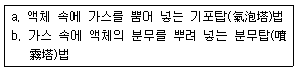
- 가스의 액체에 대한 용해도가 클 때는 b) 법을 사용한다.
- 가스의 액체에 대한 용해도가 작을 때는 b)법을 사용한다.
- 가스의 액체에 대한 용해도가 크고 작은 것에 상관없이 어느 방법이든 같다.
- 가스의 액체에 대한 용해도가 클 때는 a) 법을 사용한다.
(정답률: 알수없음)
54. 건조 속도곡선에서 두 단계의 감율 건조단계 (그림 참조)를 나타내는 대표적인 물질은?
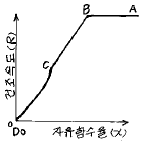
- 모래층(sand bed)
- 비공성 점토스라브(non porous clay slab)
- 다공성 도자기판(porous ceramic plate)
- 비공성 플라스틱막(non porous plastic flim)
(정답률: 알수없음)
55. NNu (Nusselt number)의 정의로서 옳은 것은? (단, Nst = stanton수, Npr = Prandtl수)
- KD/h
- 전도(conduction)저항/대류(convection)저항
- 전체의 온도구배/표면에서의 온도구배
- Nst/NReㆍNpr
(정답률: 알수없음)
56. 추출에 대한 설명으로 옳지 않은 것은?
- 추출은 증류로 분리할 수 있는 물질만 분리할 수 있다.
- 두 용액 중 용해도 차가 현저하게 큰 것을 분리할 수 있다.
- 끓는점이 비슷한 경우 증류보다 추출법을 이용한다.
- 고-액 추출은 침출(leaching), 액 - 액 추출은 액체추출(extraction)이라 한다.
(정답률: 알수없음)
57. 증류탑으로 들어가는 feed 는 찬 액체로 들어가기 때문에 feed 1 mole 당 흡입단(feed pate)으로 오는 vapor 중 0.4mole 을 액화시킨다. feed 는 80mole% methanol 과 20mole% 물이다. 공급선(feed line)을 구하면?
- y = 3.5x - 2
- y = - 1.5x + 2
- y = 1.5x + 0.5
- y = - 3.5x + 2
(정답률: 알수없음)
58. 증발기 조작에서 변수의 영향에 대한 설명으로 옳지 않은 것은?
- 증발기 내의 압력을 낮추어 비등점을 높이면 수증기의 이용율을 높일 수 있다.
- 압력을 낮추어서 진공상태에서 조작하면 가열 표면적을 상당히 줄일 수 있다.
- 증발기 조작에서 공급온도는 대단히 중요하며, 공급물을 예열하면 증발기의 열전달 면적을 줄일 수 있다
- 고압의 수증기를 사용하면 증발기의 크기와 가격을 줄일 수 있지만, 고압의 수증기는 비싸기 때문에 최적 수증기압을 결정하기 위한 총괄경제수지가 필요하다.
(정답률: 알수없음)
59. 오리피스관 전후에 마노미터를 설치하여 관속을 흐르는 유체의 압력차로부터 유량을 측정하고자 할 때, 그림에서 압력차 P1 - P2 는?
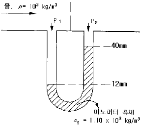
- 3.98×10-4 psia
- 2.23×10-3 psia
- 3.98×10-3 psia
- 2.23×10-2 psia
(정답률: 알수없음)
60. 내부에 가열코일이 들어 있고 외부가 가열자켈로 되어 있는 반응기 내에 비열이 0.67 ㎉/hrㆍ℃ 인 반응물 900㎏을 넣고 온도가 150℃ 인 수증기로 100℃ 까지 단열상태에서 가열하고자 한다. 반응물의 초기온도가 15℃ 일 때 100℃ 까지 가열하는데 필요한 시간은? (단, 총괄 전열계수는 730㎉/hrㆍm2ㆍ℃ 이고 전열면적은 1.5m2 이다.)
- 7분
- 14분
- 18분
- 33분
(정답률: 알수없음)
4과목: 반응공학
61. 다음 그림은 농도 - 시간의 곡선이다. 옳은 반응식은?
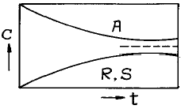
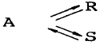
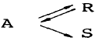
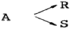
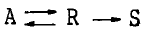
(정답률: 알수없음)
62. 액상 연속 반응 A → R → S 에서 R 이 목표 생성물이다. 이 반응을 플러그 흐름 반응기에서 진행시키고자 할 때 반응기의 크기에 관한 설명으로 가장 옳은 것은?
- 작은 것일수록 좋다.
- 큰 것일수록 좋다.
- 반응 속도식에 따라 큰 것일수록 또는 작은 것일수록 좋을 수 있다.
- 항상 최적의 크기가 있다.
(정답률: 알수없음)
63.
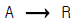
인 액상반응에 대한 평형상수가 K298 = 300 이고 반응열 Δ Hr298 = -18,000㎈/㏖ 이다. 75℃ 에서 평형 전환율은?- 69%
- 55%
- 79%
- 93%
(정답률: 알수없음)
64. A → R, k1 = 100 R → S, k2 = 1 인 반응은 A → S, k 로 볼 수 있다. 이 때 k값은?
- 0.99
- 1
- 100
- 101
(정답률: 알수없음)
65. Langmuir 모델의 가정으로 옳지 않은 것은?
- 흡착이 일어나는 고체 표면층은 균일하다.
- 흡착물은 이웃 흡착물과 상호작용을 전혀하지 않는다
- 흡착열은 동일하다.
- 흡착층은 단분자 층과 다분자 층 공히 적용된다.
(정답률: 알수없음)
66. 1 차 반응일 때 플러그 흐름 반응기의 공간시간(Space time)은? (단, 밀도는 일정하다.)
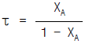
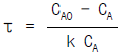
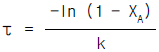
- τ = ln (1 - XA)
(정답률: 알수없음)
67. 초기농도가 1mole/ℓ인 액체 A가 1ℓ/ min 의 속도로 2liter 부피의 혼합반응기에 공급되어 출구농도가 0.1mole/ℓ 이었다면 A 의 소멸속도(mole/ℓㆍmin)는?
- 0.45
- 0.50
- 0.75
- 0.90
(정답률: 알수없음)
68. 어떤 반응에서 무촉매 상태와 촉매 상태와의 반응속도를 비교 하였더니 각 속도 상수의 정수비는 1 : 1000 이었다 20℃ 에서 두 상태의 활성화 에너지 차는?
- 31⑤㎈
- 3725㎈
- 4022㎈
- 4303㎈
(정답률: 알수없음)
69. NO2 의 분해반응 속도상수는 1차 반응으로서 694℃ 에서 0.138ℓ /molㆍsec 이고 812℃ 에서는 0.370ℓ / molㆍsec이다 이 반응에서 550℃ 일 때 속도상수는?
- 0.0482ℓ /molㆍsec
- 0.0382ℓ /molㆍsec
- 0.0282ℓ /molㆍsec
- 0.0182ℓ /molㆍsec
(정답률: 알수없음)
70. 이상형 반응기의 대표적인 예가 아닌 것은?
- 회분식 반응기
- 플러그흐름 반응기
- 혼합흐름 반응기
- 촉매 반응기
(정답률: 알수없음)
71. 직렬반응에서 원하는 제품의 수율을 최대로 하는 조건으로 옳지 않은 것은?
- 반응기 내에서의 여러 반응물의 조성을 균일하게 유지한다.
- 촉매를 사용하여 원하는 반응의 반응속도를 빠르게 한다.
- 원하는 반응과 부반응이 같은 차수이면 온도를 높게 혹은 낮게 유지한다.
- 반응물의 농도를 높게 혹은 낮게 유지한다.
(정답률: 알수없음)
72. 다음과 같은 평행반응이 진행되고 있을 때, 원하는 생성물이 S 라면 반응물의 농도는 어떻게 조절해 주어야 하는 가?
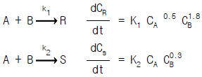
- CA 를 높게, CB 를 낮게
- CA 를 낮게, CB 를 높게
- CA 를 높게, CB 를 높게
- CA 를 낮게, CB 를 낮게
(정답률: 알수없음)
73. 그림은 자동 촉매반응(autocatalytic reaction) 에 대한 것이다. 옳지 않은 것은?
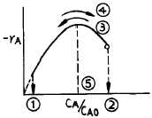
- 반응 초기의 CA/CAO 값은 ②로서 1 의 값을 갖는다.
- 반응의 진행방향은 ③ 이다.
- 반응의 진행방향은 ④ 이다.
- 최대반응 속도일 때의 CA/CAO 값은 ⑤일 때이다.
(정답률: 알수없음)
74. 순환이 없는 자기촉매 반응에서 최종 전화율이 최대 속도점보다 낮을 때 사용하기에 유리한 반응기는?
- 혼합 반응기
- 플러그 반응기
- 혼합 반응기와 플러그 반응기 직렬 연결
- 혼합 반응기와 플러그 반응기 병렬 연결
(정답률: 알수없음)
75. 반응이 다음과 같은 기초반응일 때 속도식으로 옳은 것은?
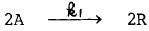
- -rA=rR=k1CA2
- -rA=-rR=k1CA2
- -rA=rR=k1CA
- -rA=-rR=k1CA
(정답률: 알수없음)
76. 순간 수득율 ø = 1/(1+CA) 인 반응을 직렬로 연결된 두개의 혼합반응기에서 진행시킬 때 총괄수득율은? (단, CAO = 1, CA1 = 1/2, CA2 = 0 mole/ℓ 이다.)
- 1/2
- 2/3
- 5/6
- 1
(정답률: 알수없음)
77. A → R → S 로 표시되는 직렬 반응에서 R 의 생성반응이 A 에 관하여 2차이고 S 의 생성반응이 R 에 관하여 1차이면 R 의 생성에 유리한 반응조건은?
- A 의 초기농도를 높이고 관형반응기를 사용한다
- A 의 초기농도를 낮추고 혼합반응기를 사용한다
- A 의 초기농도를 높이고 혼합반응기를 사용한다
- A 의 초기농도를 낮추고 관형반응기를 사용한다
(정답률: 알수없음)
78. 혼합흐름 반응기에서 다음과 같은 액상 1차 반응이 진행되고 있으며 60 % 의 A가 반응된다. 반응기의 크기만을 4 배로 증가 시키면 A 의 몇 % 가 반응 되겠는가?
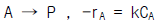
- 60 %
- 73 %
- 86 %
- 92 %
(정답률: 알수없음)
79. A → R 인 비가역 1차 반응에서 다른 조건이 모두 같을 때 CAo 를 증가시키면 전화율은?
- 증가한다
- 감소한다
- 일정하다
- 알수없다
(정답률: 알수없음)
80. 촉매의 세공부피 측정을 위하여 촉매(고체) 시료 90g 을 일정한 밀폐된 용기에 넣고 낮은 압력에서 수은을 주입하여 부피를 측정한 결과 40㎝3 이었으며, 다시 수은 제거 후 He 을 주입한 결과 80㎝3 이었다. 이때 촉매의 진밀도(true density)는?
- 1.25g/㎝3
- 2.25g/㎝3
- 3.25g/㎝3
- 4.25g/㎝3
(정답률: 알수없음)
5과목: 공정제어
81. 전달함수 G(s)의 단위계단(unit step)입력에 대한 응답을 ys,단위순간(impulse)입력에 대한 응답을 yI라한다면 ys와 yI의 관계는?
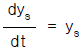
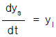
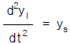
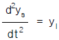
(정답률: 알수없음)
82. 다음 블록선도에서 전달함수
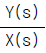
는?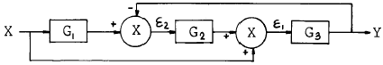
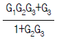
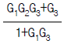
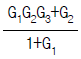
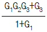
(정답률: 알수없음)
83. 다음은 함수 f(t)의 그림이다. 이 그림은 다음식 중의 어느것에 해당하는가?
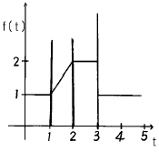
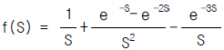
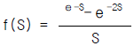
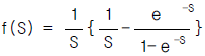
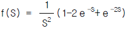
(정답률: 알수없음)
84. 다음 각항의 설명 중 Routh법에 의한 제어계의 안정성 판별조건과 관계 없는 것은?
- Routh array의 첫번째 열에 전부 양(+)의 숫자만 있어야 안정하다.
- 특성방정식이 S에 대해 n차 다항식으로 나타나야 한다.
- 제어계에 수송지연이 존재하면 Routh법은 쓸수없다.
- 특성방정식의 어느 근이든 복소수축의 오른쪽에 위치할때는 계가 안정하다.
(정답률: 알수없음)
85. 다음의 비선형공정을 정상상태의 데이타yss,uss에 대해 선형화 한 것은?
(정답률: 알수없음)
86. 입력과 출력사이의 전달함수의 정의로서 가장 타당한 것은?
(정답률: 알수없음)
87. 그림과 같은 응답 곡선은 2차계 시스템에서 ζ 가 어떤 값을 가질 때 나타나는가?
- ζ > 1
- ζ = 1
- ζ < 1
- ζ ≥ 0
(정답률: 알수없음)
88. 공정의 동적거동 형태 중 역응답(inverse response)이란?
- 양의 단위 입력에 대해 정상상태에서 음의 출력을 보이는 것.
- 입력에 대해 일정시간이 경과한 후 응답이 나올 때
- 입력에 대해 진동응답을 보일 때
- 초기응답이 정상상태 이득부호와 반대로 나올 때
(정답률: 알수없음)
89. 비례제어기의 비례제어 상수를 선형계가 안정되도록 결정하기 위해 비례제어 상수를 0으로 놓고 특성방정식을 푼 결과 서로 다른 세 개의 음수의 실근이 구해졌다. 비례제어 상수를 점점 크게 할 때 나타나는 현상 중 올바른 것은?
- 특성방정식은 비례제어 상수와 관계없으므로 세 개의 실근값은 변화가 없으며 계는 계속 안정하다.
- 비례제어 상수가 커짐에 따라 세 개의 실근값 중 하나는 양수의 실근으로 가게 되므로 계가 불안정해진다.
- 비례제어 상수가 커짐에 따라 세 개의 실근값 중 두개는 음수의 실수값을 갖는 켤레 복소수 근으로 갖게되므로 계의 안정성은 유지된다.
- 비례제어 상수가 커짐에 따라 세 개의 실근값 중 두개는 양수의 실수값을 갖는 켤레 복소수 근으로 갖게되므로 계가 불안정해진다.
(정답률: 알수없음)
90. 공정제어에 사용되는 제어기의 기본형 4종류중 그 전달함수가 의 꼴로 표시되는 제어기는 어느 것인가?
- P형
- PI형
- PD형
- PID형
(정답률: 알수없음)
91. 시간상수 τ 가 3sec이고 게인 Kp가 1인 온도계가 초기에 20℃를 유지하고 있다. 이 온도계를 100℃의 물속에 넣었을때 3sec후의 온도계 읽음은?
- 68.4℃
- 70.6℃
- 72.3℃
- 81.9℃
(정답률: 알수없음)
92. 그림과 같은 액면계(liquid level system)가 있다. 단면적(A)이 A = 3ft2, qo=8√h 이고 평균 조작수위 h = 4ft 일 때 시상수(time constant)는 얼마인가?
- 4/9min
- 3√3 /4min
- 3/4min
- 3/2min
(정답률: 알수없음)
93. f(t)=1의 Laplace 변환은?
- S
- S2
(정답률: 알수없음)
94. 그림의 블록선도에서 출력 Y1(s)와 Y2(s)의 표현으로서 올바른 것은?
(정답률: 알수없음)
95. 개회로 전달함수가 K/(s + 4)(s + 5)S인 부궤환계가 있다. 근궤적의 점근선이 실수축과 이루는 각도는 얼마인가?
(정답률: 알수없음)
96. 다음 그림은 전기 조절기의 어떤 동작에 상당하는가?
- 비례 - 적분동작기구
- 비례 - 미분동작기구
- 비례 - 미분 -적분동작기구
- 비례 동작기구
(정답률: 알수없음)
97. 그림의 기호는 무엇을 나타내는가?
- 팽창식 온도지시 조절계
- 온도기록 조절계(panel상에)
- 온도검출요소 조절계
- 온도기록 조절계(현장에)
(정답률: 알수없음)
98. 전달함수가 Y(S)/X(S) = (τ1S + 1)/(τ2S + 1)인 계에서 단위계단응답 Y(t)는?
(정답률: 알수없음)
99. 복사에 의한 열전달 식은 q = kcAT4 으로 나타내어 진다(k, c, A : 상수). 정상상태에서 T = Ts 일 때 이 식을 선형화 시키면?
- kcA(T-Ts)
(정답률: 알수없음)
100. 다음은 화학공장의 공정제어의 필요성에 대해 설명한 것이다. 잘못 설명된 것은?
- 균일한 제품을 생산하여 제품의 질을 향상시키기 위해
- 운전도중 안전사고의 예방을 위해
- 생산비 절감 및 생산성 향상을 위해
- 공장운전의 무인화를 위해
(정답률: 알수없음)
6과목: 화학공업개론
101. 인산 2암모늄 비료는 (NH4)2HPO4이다. 이 조성 중 P2O5의 이론적인 함량은 백분율로 얼마가 되겠는가? (단, (NH4)2HPO4 M.W = 132, P2O5 M.W = 142)
- 53.8%
- 73.8%
- 81.9%
- 92.9%
(정답률: 알수없음)
102. 접촉식 황산제조 공정에서 전화기에 대한 설명중 옳은 것은?
- 전화기조작에서 온도조절이 좋지 않아서 온도가 너무 상승하면 전화율이 감소하므로 이의조정이 중요하다.
- 전화기는 SO3 생성열을 제거시키며 동시에 미반응가스를 냉각시킨다.
- 촉매의 온도는 200℃ 이하로 운전하는 것이 좋기때문에 열교환기의 용량을 증대시킬 필요가 있다.
- 전화기의 열교환방식은 최근에는 거의 내부 열교환방식을 채택하고 있다.
(정답률: 알수없음)
103. Dorr식 NaOH 제조공정에서 CaCO3가 각 분리조 바닥에 용이하게 배출될 수 있을 정도로 잘 가라앉기 위하여는 어떤 인자들이 작용되는가?
- 입자의 모양
- 침전입자와 액체와의 밀도차
- 입자의 크기
- 액체의 비중
(정답률: 알수없음)
104. 부식전류가 크게 되는 원인을 열거한 것이다. 옳지 않은 것은?
- 산소분포가 균일할 때
- 서로 다른 금속들이 접하고 있을 때
- 금속이 전도성이 큰 전해액과 접촉하고 있을 때
- 금속표면의 내부응력의 차가 클 때
(정답률: 알수없음)
1⑤. 산화에틸렌의 수화반응으로 만들어지는 것은?
- 아세트알데히드
- 에틸렌글리콜
- 에틸알코올
- 글리세린
(정답률: 알수없음)
106. 에너지원으로 석유ㆍ석탄등의 화석연료를 이용시 나타나는 문제점 및 에너지의 변환에 대한 설명중 맞는 것은?
- CO2의 증가는 지구온난화 및 오존층파괴의 원인
- CO2와 SOX는 광화학스모그의 원인
- NOX는 산성비 및 공기중 오존농도 증가의 원인
- 열에너지로 부터 기계에너지로의 변환효율은 거의 100%에 가깝다.
(정답률: 알수없음)
107. 염화수소(HCl)가스의 합성에 있어서 폭발이 일어나지 않도록 주의하여야 할 사항이 아닌 것은?
- 공기와 같은 불활성 가스로 염소가스를 묽게 한다.
- 석영괘, 자기괘등 반응완화 촉매를 사용한다.
- 생성된 염화수소 가스를 냉각 시킨다.
- 수소가스를 과잉으로 사용하여 염소가스를 미반응 상태가 안되도록 한다.
(정답률: 알수없음)
108. 석유계 아세틸렌 제조법이 아닌 것은?
- 아크 분해법
- 부분 연소법
- 저온 분유법
- 수증기 분해법
(정답률: 알수없음)
109. 암모니아 산화법에 의한 질산 제조에서 백금-로듐(Pt-Rh) 촉매에 대한 설명 중 옳지 않은 것은?
- 백금(Pt) 단독으로 사용하는 것보다 수명이 60% 정도 연장된다.
- 촉매 독물질로서는 비소, 유황, 인, 규소 등의 화합물이다.
- 백금에 로듐(Rh) 함량이 10%인 것이 2%인 것보다 전화율이 낮다.
- 백금(Pt) 단독으로 사용하는 것보다 내열성이 강하다
(정답률: 알수없음)
110. 수평균 분자량이 100,000인 어떤 고분자 시료 1 g 과 수평균 분자량이 200,000인 같은 고분자 시료 2 g을 서로 섞으면 혼합시료의 수평균 분자량은?
- 0.5× 105
- 0.667× 105
- 1.5× 105
- 1.667× 105
(정답률: 알수없음)
111. 암모니아 합성은 고온고압하에서 이루어지며 촉매에 가장 적절한 온도를 설정하는 것이 중요하다. 이때의 온도조절 방식이 아닌 것은?
- 뜨거운 가스 혼합식
- 촉매층간 냉각 방식
- 촉매층내 냉각방식
- 열 교환식
(정답률: 알수없음)
112. H2SO4 60%, HNO3 32%, H2O 8%의 조성을 가진 혼합산 100kg을 벤젠으로 니트로화 할 때 그 중 질산이 화학양론적으로 전부 벤젠과 반응하였다면 DVS(Dehydration Value of Sulfuric acid) 값은?
- 2.50
- 3.50
- 4.50
- 5.50
(정답률: 알수없음)
113. 디음 중 연료전지에 대한 설명 중 틀린 것은?
- 연료전지란 연료의 연소열을 직접 전기에너지로 변환하는 전지이다.
- 음극활성 물질로 H2, 저급탄화수소와 같은 기체, 알코올과 같은 액체를 사용한다.
- 연료전지의 전해질로서 알칼리 수용액, 용융탄산염, 인산수용액 등을 사용한다.
- 양극활성 물질로 hydrazine, Cl2와 같은 기체를 사용한다.
(정답률: 알수없음)
114. 나프탈렌을 고온(160℃)에서 H2SO4과 반응시킨 후 알칼리 용융, 산처리하여 얻을 수 있는 주생성물은?
- α -나프톨
- β -나프톨
- α -나프탈렌 술폰산
- β -나프탈렌 술폰산
(정답률: 알수없음)
115. 탄화수소의 열분해를 방지하기 위하여 사용되는 증류법은?
- 상압증류
- 감압증류
- 가압증류
- 추출증류
(정답률: 알수없음)
116. 스티렌의 제조원료는?
- 에틸렌과 톨루엔
- 에틸렌과 벤젠
- 에틸렌과 클로로벤젠
- 프로필렌과 톨루엔
(정답률: 알수없음)
117. 오늘날 환경오염에 대한 심각성이 대두되면서 폐수처리나 유해가스를 효과적으로 처리할 수 있는 장치의 개발이 많이 요구되고 있다. 특히 값싸고 안전한 광촉매를 이용한 처리기술이 발달되고 있는데, 다음 중 광촉매로 많이 사용되고 있는 반도체 물질은?
- MgO
- CuO
- TiO2
- FeO
(정답률: 알수없음)
118. 인광석을 산분해하여 인산을 제조하는 방식 중 습식법에 해당하는 것이 아닌 것은?
- 황산 분해법
- 염산 분해법
- 질산 분해법
- 아세트산 분해법
(정답률: 알수없음)
119. 비스브레이킹(visbreaking)에 관한 설명중 옳지 않은 것은?
- 접촉분해시 코오크스화하는 것을 억제하는 전처리이다.
- 약 480℃, 수십기압하에서 실시된다.
- 고체상태로 실시하는 완만한 열분해 법이다.
- 접촉 분해로 원료유의 점도를 저하시킨다.
(정답률: 알수없음)
120. 요소비료의 제조방법 중 카바메이트 순환방식의 제조방법은?
- IG법
- Inventa법
- Du Pont법
- CCC법
(정답률: 알수없음)